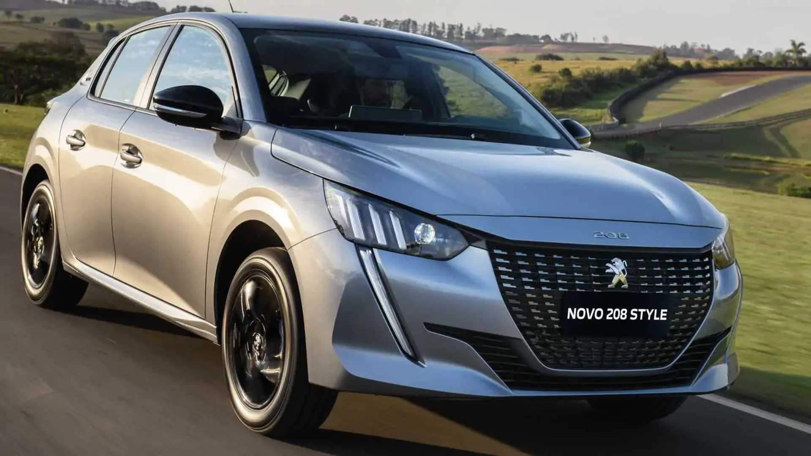

listamos exelentes carros populares, são os carros mais barato das marcas, ou menos caro
Já que infelizmente, tudo no brasil é desta forma.
renaut sandeiro

começamos nossa lista, com um exelente carro custo beneficio. o sandeiro é sem duvidas um exelente carro para se ter em 2024.
hyundai hb20

hb 20 2023
outro carro com um exelente custo beneficio. o hb 20 é um exelente carro, além de muito econômico
woksvagen polo
o sucessor do antigo gol, que ja chegou com o mesmo valor do seu antecessor, e com certeza tem um bom custo beneficio.
com certeza o polotamém pode ser uma otima escolha, de carro popular em 2024.
pegout 208
um carro com visual bem sofisticado, que eu gostei bastante, o pegout 208é um uma otima opção de compra para 2024.
fiat argo

e por ultimo, mas não menos inportante, o fiat argoé mais uma otima opção de carro novo, para se comprar no brasil, também com um visual bem sofisticado, é muito econômico também.